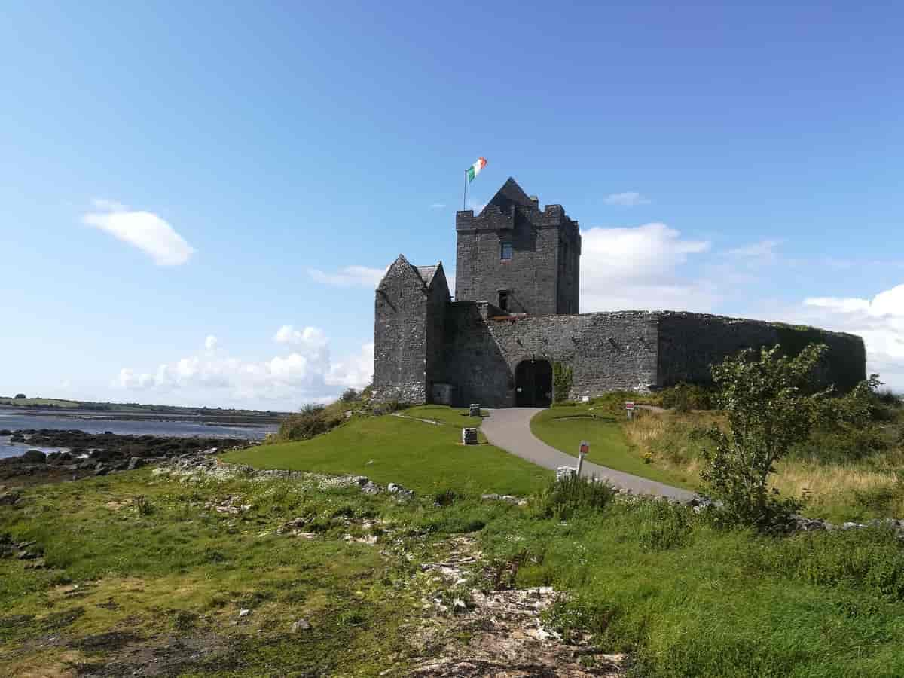
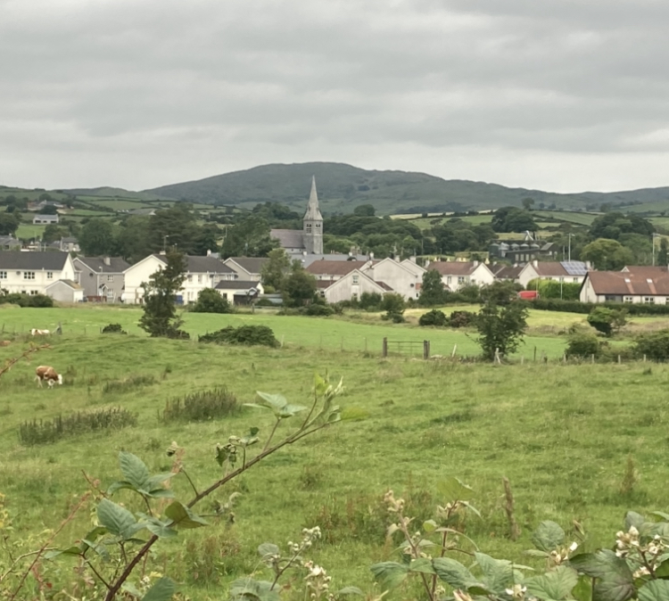
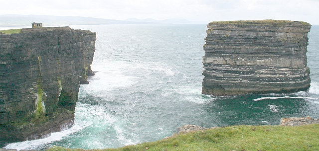
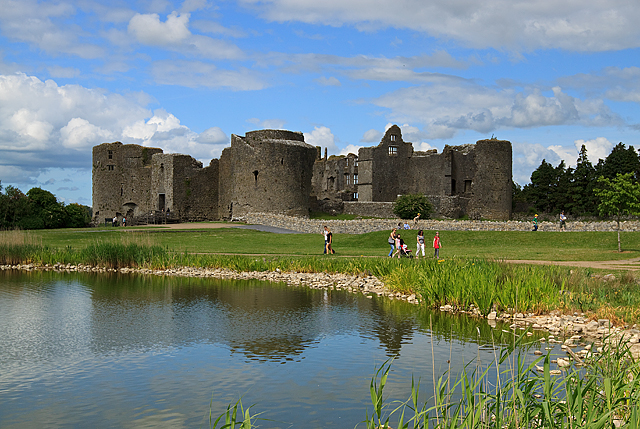
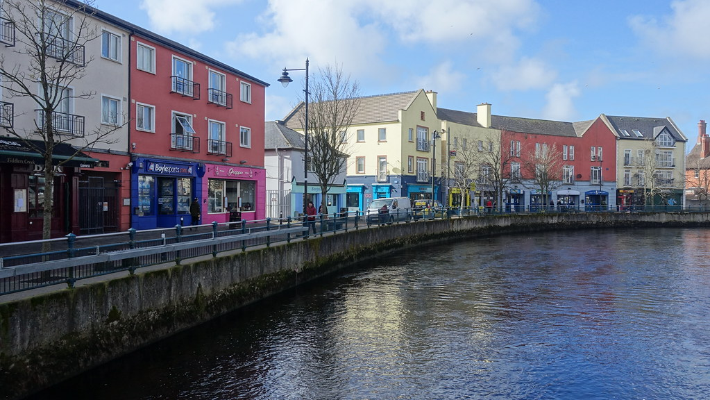

Provincia del Connacht
Indice:
Provincia del Connacht
Il Connacht è la più occidentale delle quattro province
della Repubblica d'Irlanda ed è la meno vasta per territorio, sia per
superficie cheper numero di contee.
Abitata in età neolitica da tribù celtiche, fu uno dei regni in cui queste confluirono all’inizio dell’epoca storica;
nel V sec. fu evangelizzata da San Patrizio. Dopo la conquista inglese nel XVI secolo subì una debole colonizzazione
mantenendo, rispetto al resto del paese, i tipici caratteri della civiltà gaelica. Il Connacht è bagnato come tutte le altre province dallo Shannon, il fiume più lungo dell'arcipelago britannico: il
corso dello Shannon segna gran parte del confine orientale con il Leinster. Essendo soltanto quattro e tutte di dimensioni non particolarmente differenti, le province irlandesi sono tutte
caratterizzati da zone interne piuttosto pianeggianti o collinari interrotte talvolta da paludi e torbiere, ed in questo
non differisce neanche il Connacht. Le montagne sono situate nei pressi delle zone costiere e danno a volte luogo a
impervie scogliere.
Per saperne di più, visita la pagina Connacht.
Le contee del Connacht sono cinque:
Contea di Galway

Galway è una contea situata sulla costa occidentale
della Repubblica d'Irlanda. Fa parte della provincia irlandese del Connacht
e confina a nord con la contea di Mayo, a nord-est con la contea di Roscommon, ad est con
l'Offaly, a sud-est con la
contea di Tipperary e a sud con la contea di Clare, mentre si affaccia ad ovest sull'Oceano
Atlantico e a sud-ovest
sulla Galway Bay. Il suo capoluogo è la città di Galway, da cui prende il nome ed è la
seconda contea d'Irlanda per dimensione, superata soltanto dalla contea di Cork.
La parola Galway deriva da quella gaelica Gallimh, derivata direttamente dalla città capoluogo. Significa null'altro che
"pietroso" in riferimento al fiume Corrib che scorre per pochi chilometri dall'omonimo lago attraverso la città prima di
gettarsi nell'Atlantico. Originariamente infatti era il fiume a chiamarsi Gallimh mentre il nome completo
dell'insediamento era Dún Bhun na Gaillimhe ("forte sulla foce del Gaillimh").
Di questo luogo possiamo citare: Dunmore.
Contea di Leitrim

Leitrim è una contea settentrionale del
Connacht, nella Repubblica d'Irlanda. Confina a nord col Donegal, a
nord-est con la
nordirlandese Fermanagh, ad est col Cavan, a sud est con Longford, a sud-ovest con Roscommon
e ad ovest con Sligo,
mentre a nord-ovest con l'Oceano Atlantico. La county town è Carrick-on-Shannon. Il nome
Leitrim deriva dal gaelico Liatroim che significa letteralmente "cresta grigia".
Il Leitrim, seppure affacciandosi per un brevissimo tratto sulla baia di Donegal,
separando Sligo e Donegal, è una
contea per lo più dell'entroterra, piccola di dimensioni, poco abitata e caratterizzata da
un numero così alto di
specchi d'acqua e fiumi, al punto che c'è uno scherzoso modo di dire in Irlanda secondo il
quale la terra nel Leitrim si
venda a galloni e non ad acri.
Contea di Mayo

Mayo (Maigh Eo in gaelico irlandese) è una delle
trentadue contee tradizionali d'Irlanda e una delle ventisei contee moderne della Repubblica
d'Irlanda,
situata a ovest-nord-ovest dell'isola d'appartenenza, nella provincia del Connacht; il
capoluogo è Castlebar.
Seguendo la tendenza di tutta l'isola d'Irlanda, pianeggiante al centro e montagnosa lungo
le coste specialmente
occidentali, il Mayo riassume queste caratteristiche totalmente, presentando ambienti
tendenzialmente pianeggianti o
collinari comunque dall'andamento dolce all'interno e nella zona orientale e al contrario
zone impervie e spesso
inospitali contraddistinte da altopiani e massicci montuosi a ridosso della costa.
Di questo luogo possiamo citare: Moyrein e Piana di Moytura
Tuátha dé Danaan-Introduzione Battaglie contro i Firbolg Seanchan il bardo e il re dei gatti
In questo luogo compaiono:
Tuátha dé Danaan Dagda Firbolg Fomori Seanchan Milesi
Contea di Roscommon
 Roscommon (in gaelico irlandese Ros Comáin) è una contea tradizionale e amministrativa dell'Irlanda centrale, nella provincia del Connacht e quindi politicamente della Repubblica d'Irlanda. Confina, in senso orario da ovest, con le contee di Mayo, Sligo, Leitrim, Longford, Westmeath, Offaly e Galway. Il nome Roscommon deriva dal gaelico irlandese Ros Comáin, che significa nient'altro che "Zona collinare boscosa di Coman", dal santo San Coman che predicò in questa regione e a cui gli abitanti della contea sono comunque devoti. Per gran parte del territorio, la contea è formata dalla vasta piana di calcare che interessa quasi tutte le midlands irlandesi, ed il paesaggio si presenta prettamente pianeggiante o poco collinare, con poche rocce grigiastre che fuoriescono da terreno. Nel nord-est, nel confine col Leitrim, si ergono i Monti Braulieve, pareti rocciose piuttosto ripide e che terminano in sommità piatte e abbastanza basse, con la cima più alta nel Monte Cashel; nel nord-ovest, invece, sono presenti i Curlew, molto simili agli altri, che delimitano il confine con Sligo. Ad est invece c'è la catena degli Slieve Bawn, formata di arenaria ma sempre con altitudini piuttosto basse. Il Roscommon contiene un numero molto elevato di fiumi e laghi. Lo Shannon, fiume più grande d'Irlanda, forma praticamente tutto il confine orientale della contea.
Contea di Sligo

Sligo è una contea dell'Irlanda, situata nella parte
nord occidentale della provincia del Connacht. Confina ad est con il
Leitrim, a sud-est col Roscommon, a sud ed ovest con il Mayo. Si affaccia a nord-ovest
sull'Oceano Atlantico.
Contrariamente a quanto erroneamente spesso creduto, Sligo non confina invece col Donegal,
dal quale è separato dal
piccolo tratto costiero di Leitrim lungo soltanto 7 km. L'Irlanda del Nord dista invece
poche decine di chilometri.
L'omonima cittadina di Sligo è il capoluogo di contea ed il centro più importante. Il nome
della contea deriva direttamente da quello del proprio capoluogo, che a sua volta l'ha
ereditato dal fiume che
lo attraversa, oggi conosciuto come Garavogue. Sligeach, in gaelico, significa "ricco di
conchiglie": questo perché
spesso, per effetto delle maree, l'acqua marina entrava nel letto del fiume, lasciando nelle
sponde e nelle zone
circostanti conchiglie e resti di molluschi.
Di questo luogo possiamo citare: Ben Bulban e Glencar.
La nascita di Oisin Il bimbo rapito
In questo luogo compaiono:
Finn Oisin Padre John Hart